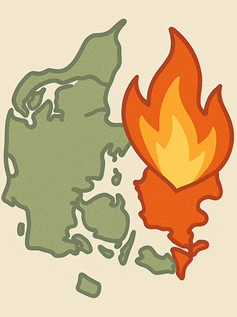

Tema 4
Grundlæggende
Brugergrænsefladeudvikling
Kort
Opsummering
Tema 4 bestod af en udvikling i HTML-kompetencer, da vi blev introduceret til nye elementer som forms, samt en introduktion til Adobe Illustrator, hvor vi arbejdede med at skabe en infografik. Temaet bundede i at skabe et infosite omkring en opdigtet nødsituation. Mit site var lavet til “preppere”, som havde ret, da Danmark nu var under invasion. Tonen var bedrevidende og sarkastisk, og looket var militært inspireret. Da jeg i forvejen havde erfaring med andre Adobe-programmer, gik det fint med at sætte mig ind i Adobe Illustrator og de forskellige basale funktioner.
Min infografik forestillede et kig igennem et sigtekorn ud mod en infiltreret grund. Jeg lærte, hvordan man kunne eksportere som SVG-fil og gøre denne interaktiv. I sammenhæng med dette blev jeg introduceret til JavaScript. Jeg havde førhen brugt JS i Tema 3 til at lave en burger menu, men denne havde jeg blot fået udleveret og ikke sat mig ind i. Nu blev jeg sat ind i, hvordan JS fungerer, og brugte dette til at ændre indhold i min HTML, når man interagerede med infografikken. JS blev også brugt i samarbejde med HTML forms samt til at lave et “dark theme” for siden.
Projektet
Ofte stillede
Spørgsmål
Hvad lærte jeg i løbet af dette tema?
Jeg fik grundlæggende kompetencer i Illustrator og blev klogere på SVG-filers egenskaber. Mine kompetencer i HTML blev udvidet, da jeg fik arbejdet med nye elementer som forms, popover og accordion. Jeg blev introduceret til JavaScript og fik en basal forståelse for, hvordan kodesproget er opbygget, og hvordan dette kan bruges til bl.a. at ændre i ens HTML eller samarbejde med CSS. Jeg blev også introduceret til variabler i CSS og forstod, hvordan det kan gavne at bruge disse, når man har de samme input flere forskellige steder.
Hvad var min største udfordring?
Det var en udfordring at sætte mig ind i den udleverede struktur på siden og bygge videre på den. Der var en del CSS-filer, og disse var bygget med variabler, som jeg ikke tidligere havde arbejdet med. Det tog lidt tid at finde ud af, hvor jeg skulle lave ændringerne, og hvordan jeg skulle referere til disse. Derudover blev jeg ikke særlig tilfreds med siden, da jeg ikke selv havde lavet strukturen.
Hvad ville jeg have gjort anderledes?
Min primære fejltagelse under forløbet var ikke at forberede udseendet ift. farverne ordentligt, før jeg gik i gang med at kode. Det var dér, jeg spildte mest tid, da jeg ændrede det en del gange pga. utilfredshed. Jeg startede ud med for mørk baggrundsfarve, reviderede det, men mistede så kontrast og reviderede det en del gange mere, før jeg kom til det endelige resultat.